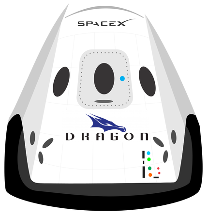

Hyperblog
Tu blog de confianza
Este es el título interesante y atractivo del post
Y este es el párrafo de inicio donde vamos a explicar las cosas increíbles que se pueden hacer con ramas

Los blog son la mejor forma de compartir información y tus ideas. Muchos mas que ir a conferencias o salir en Youtube. Execepto si eres un rockstar. Pero estadísticamenete no lo eres ...por ahora
Suscribete y dale like